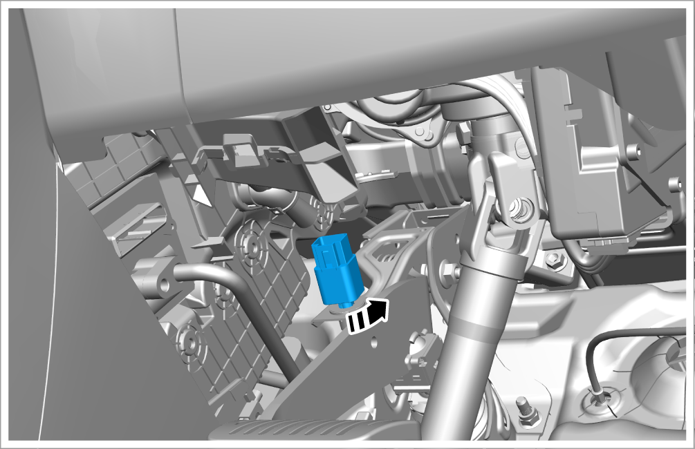
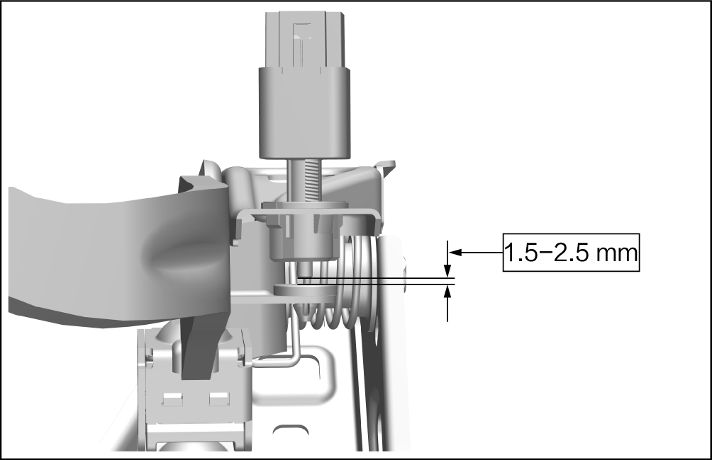
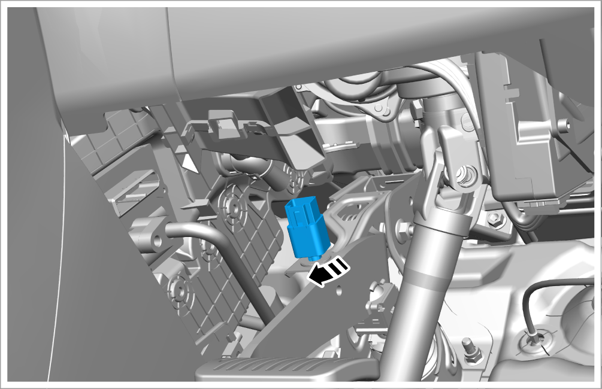

Adjustment of stop light switch clearance

After adjustment, test must be carried out: press the brake pedal and the rear brake light must go on; Release the brake pedal
and then go off the rear stop light.
-
Disconnect the stop light switch connector, and rotate unscrew the stop light switch by rotating it to the left by 45°.

-
Move up and down to adjust the clearance between the stop light switch and the stop light mounting bracket, and keep it within 1.5-2.5 mm.

-
Rotate it to the right by 45° and lock the stop light switch.
